Ejercicios interactivos del área y volumen de la esfera y otros
Resuelve los siguientes problemas:
1En un parque de mi ciudad han construido el siguiente monumento con forma de esfera. Indica el volumen y el área de esta esfera de 70 dm de diámetro, redondeando a dos cifras decimales.
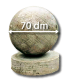Como la esfera tiene 70 dm de diámetro, su radio será de 35 dm
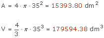
2Indica la medida del radio de una pompa de jabón de volumen 12π cm3.
r = cm
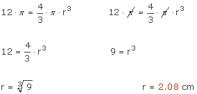
3Calcula el área de la siguiente figura.
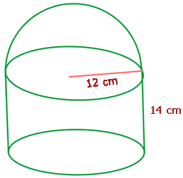A = cm2
El área del cilindro será la suma del área lateral y el área de la base:
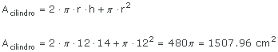
El área de la semiesfera es:
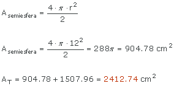
4De forma aproximada podemos decir que una naranja es una esfera. Ale se come 7 de los 12 gajos de una naranja de 10 cm de diámtro. ¿Qué volumen ocupaba la cantidad de naranja consumida por Ale? Redondea a dos cifras decimales.
V = cm3
El problema consiste en calcular el volumen de una cuña esférica siendo el radio de la naranja 5 cm y n = 360 : 12 = 30º.
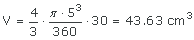
Como se ha comido 7 gajos de naranja, el volumen consumido será:
5Calcular la altura de la siguiente figura de forma que su área coincida con la de un huso esférico de 20º de amplitud. ¿Y si el diámetro fuese de 12 cm? ¿Dependerá del radio de la esfera?
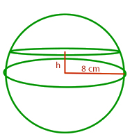h = cm
h = cm
Sí o No:
Observamos que se trata de una zona esférica. Calculamos el área del huso esférico y la igualamos al área de la zona esférica para calcular la altura.

Si ahora el radio mide 12 : 2 = 6 cm:

Obtenemos el mismo valor para la altura, esto se debe a que el radio no interviene en el calculo, de hecho podríamos haber calculado la altura de la siguiente forma:
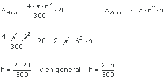
6Calcula el área y el volumen de un casquete esférico de 6 cm de altura y radio 9 cm. Redondea a dos difras decimales.
A = cm2
V = cm3
Para calcular el área del casquete hay que conocer el radio de la esfera a la que pertenece:
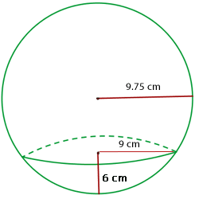
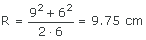
El área y el volumen serán:
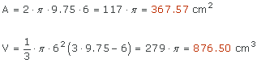
7Calcula el área y el volumen de la zona esférica que resulta de cortar una bola de 10 cm de diámetro con dos planos paralelos que distan, respectivamente 2 cm y 3 cm del centro de la esfera.
A = cm2
Suponiendo que compramos otra bola como la anterior, calcular el volumen de la zona esférica cuyas circunferencias tienen como radios 5 cm y 4 cm y la distancia entre ellas es de 2.5 cm
V = cm3
 Resolvemos la primera parte del problema. Como no conocemos el radio de las dos circunferencias que se obtienen al cortar con el plano tendremos que calcular el área utilizando el radio de la esfera y las alturas que nos dan, es decir hay que calcular el área de dos casquetes y luego restarlos al área de la esfera completa: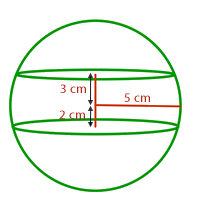
Resolvemos la primera parte del problema. Como no conocemos el radio de las dos circunferencias que se obtienen al cortar con el plano tendremos que calcular el área utilizando el radio de la esfera y las alturas que nos dan, es decir hay que calcular el área de dos casquetes y luego restarlos al área de la esfera completa: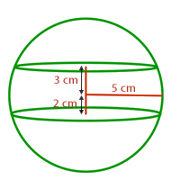
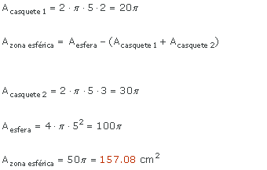
 La segunda parte del problema es inmediata, basta aplicar la fórmula del volumen del casquete.
La segunda parte del problema es inmediata, basta aplicar la fórmula del volumen del casquete.
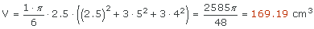
Si tienes dudas puedes consultar la teoría